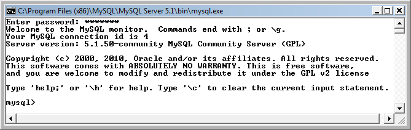
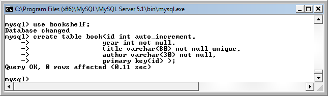

PHP & MySQL Tutorial
Creating MySQL Database and Table

http://xkcd.com/327/
SQL stands for Structured Query Language.
It's the most standard language for accessing relational database management systems (RDBMs). SQL is used to store data to and retrieve it from a database. It is used in database systems such as MySQL, Oracle, PostgreSQL, Sybase, and Microsoft SQL.
An article on MySQL and it's future, Aug 18, 2012, from Tech Crunch Oracle Makes More Moves To Kill Open Source MySQL
Oracle is holding back test cases in the latest release of MySQL. It's a move that has all the markings of the company's continued efforts to further close up the open source software and alienate the MySQL developer community.
The issue stems back to a recent discovery that the latest MySQL release has bug fixes but without a single one having any test cases associated with it. That creates all sorts of problems for developers who have no assurance that the problem is actually fixed.
....
As mentioned in the previous section, MySQL is a relational database management system (or RDMS). This RDMS runs as its own server and provides multi-user access to multiple databases at once. The source code of MySQL is available under the terms set forth in the GNU General Public License as well as lots of proprietary agreements. Members of the MySQL community have created many different branches of the RDMS - the most popular of which are Drizzle and MariaDB. As well as being the prototype of several branches, most free software projects that must have a full featured database management system (or DMS) use MySQL.
Structured Query Language (also known as SQL) is a database language. It was designed specifically to manage data in RDMSs and its conception was based upon relational algebra. The range of its capabilities includes data query and update, schema creation and modification, and data access control. It was one of the first languages using the RDMS model and is most certainly the most widely used language for these relational databases.
The SQL language is subdivided into multiple language elements:
- clauses
They are occasionally optional constituent components of statements and queries. - expressions
These produce either scalar values or tables that are comprised of columns and rows of dat. - predicates
Is an expression that evaluates to TRUE, FALSE, or UNKNOWN. Predicates are used in the search condition of WHERE clauses and HAVING clauses, the join conditions of FROM clauses, and other constructs where a Boolean value is required. . - queries
They retrieve data based on particular specifications. - statements
They affect the schemas and data or can also control transactions, program flow, connections, sessions, or diagnostics.
MySQL can be found in many web applications as the database component of a solution bundle (or LAMP) software stack. Its use can be seen widely in such popular web sites as Flickr, FaceBook, Wikipedia, Google, Nokia, and YouTube. Each one of these websites use MySQL for storage and the logging of user data. The code is comprised of the C and C++ languages and uses many different system platforms including Linux, Mac OS X, and Microsoft Windows.
SQL is now a standard and its structure is made up of many different components. These include, but are not limited to, SQL Framework, SQL/Foundation, SQL/Bindings, SQL/CLI (Call Level Interface), and SQL/XML (or XML related Specifications).
MySQL is a widely used dialect of SQL. But it is so popular, it may not fair if we call it that way.
Let's open MySQL monitor from the Start menu on Windows.
After type in the password, MySQL prompt window should look like this.
MySQL has two databases by default: an empty one called test, and one called mysql which is used by MySQL itself. The SQL command use database-name selects a database to work with.
Type use mysql; to select the mysql database, and then type show tables; to see a list of tables inside that database. Note that we need ";" to indicate the end of a command.
The command explain table_name can be used to see the format of a table. This shows all the field names in the table with details of the data they contain.
So, to see the format of the user table, type explain user.
Using SQL command, we can create MySQL databases and make modifications or query. create database database_name; is used to create a new database.
Type create database bookshelf; to create a new database called bookshelf.
It responds by confirming that the new database has been created with the message Query OK followed by the information about affected rows and time elapsed.
The name of all databases on the MySQL server can be displayed with the show database; command to confirm that the new bookshelf database is on display. The MySQL installation creates three default databases. One is an empty database named test and another is named mysql that contains data which is used by the MySQL server itselt. The third one is called information schema which is an ANSI standard set of read-only views which provide information about all of the tables, views, columns, and procedures in a database:
If a database already exists when we try to create the database, it will give us the error message:
To delete/remove a database, we use drop command. So, use drop database bookshelf; to remove bookshelf from the database.
Before we create a database table we need to select the database to which it is to be added. The command for this is use database_name;. This requires one of the existing database names.
We create a new table using create table table_name; with a comma-separated list of column names.
Following table shows the range of data types that can be used when creating table columns.
Numeric Data Types:MySQL uses all the standard ANSI SQL numeric data types, so if you're coming to MySQL from a different database system, these definitions will look familiar to you. The following list shows the common numeric data types and their descriptions.
- INT
A normal-sized integer that can be signed or unsigned. If signed, the allowable range is from -2147483648 to 2147483647. If unsigned, the allowable range is from 0 to 4294967295. You can specify a width of up to 11 digits. - TINYINT
A very small integer that can be signed or unsigned. If signed, the allowable range is from -128 to 127. If unsigned, the allowable range is from 0 to 255. You can specify a width of up to 4 digits. - SMALLINT
A small integer that can be signed or unsigned. If signed, the allowable range is from -32768 to 32767. If unsigned, the allowable range is from 0 to 65535. You can specify a width of up to 5 digits. - MEDIUMINT
A medium-sized integer that can be signed or unsigned. If signed, the allowable range is from -8388608 to 8388607. If unsigned, the allowable range is from 0 to 16777215. You can specify a width of up to 9 digits. - BIGINT
A large integer that can be signed or unsigned. If signed, the allowable range is from -9223372036854775808 to 9223372036854775807. If unsigned, the allowable range is from 0 to 18446744073709551615. You can specify a width of up to 11 digits. - FLOAT(M,D)
A floating-point number that cannot be unsigned. You can define the display length (M) and the number of decimals (D). This is not required and will default to 10,2, where 2 is the number of decimals and 10 is the total number of digits (including decimals). Decimal precision can go to 24 places for a FLOAT. - DOUBLE(M,D)
A double precision floating-point number that cannot be unsigned. You can define the display length (M) and the number of decimals (D). This is not required and will default to 16,4, where 4 is the number of decimals. Decimal precision can go to 53 places for a DOUBLE. REAL is a synonym for DOUBLE. - DECIMAL(M,D)
An unpacked floating-point number that cannot be unsigned. In unpacked decimals, each decimal corresponds to one byte. Defining the display length (M) and the number of decimals (D) is required. NUMERIC is a synonym for DECIMAL.
Date and Time Types:
The MySQL date and time datatypes are:
- DATE
A date in YYYY-MM-DD format, between 1000-01-01 and 9999-12-31. For example, December 30th, 1973 would be stored as 1973-12-30. - DATETIME
A date and time combination in YYYY-MM-DD HH:MM:SS format, between 1000-01-01 00:00:00 and 9999-12-31 23:59:59. For example, 3:30 in the afternoon on December 30th, 1973 would be stored as 1973-12-30 15:30:00. - TIMESTAMP
A timestamp between midnight, January 1, 1970 and sometime in 2037. This looks like the previous DATETIME format, only without the hyphens between numbers; 3:30 in the afternoon on December 30th, 1973 would be stored as 19731230153000 ( YYYYMMDDHHMMSS ). - TIME
Stores the time in HH:MM:SS format. - YEAR(M)
Stores a year in 2-digit or 4-digit format. If the length is specified as 2 (for example YEAR(2)), YEAR can be 1970 to 2069 (70 to 69). If the length is specified as 4, YEAR can be 1901 to 2155. The default length is 4.
String Types:
Although numeric and date types are fun, most data you'll store will be in string format. This list describes the common string datatypes in MySQL.
- CHAR(M)
A fixed-length string between 1 and 255 characters in length (for example CHAR(5)), right-padded with spaces to the specified length when stored. Defining a length is not required, but the default is 1. - VARCHAR(M)
A variable-length string between 1 and 255 characters in length; for example VARCHAR(25). You must define a length when creating a VARCHAR field. - BLOB or TEXT
A field with a maximum length of 65535 characters. BLOBs are "Binary Large Objects" and are used to store large amounts of binary data, such as images or other types of files. Fields defined as TEXT also hold large amounts of data; the difference between the two is that sorts and comparisons on stored data are case sensitive on BLOBs and are not case sensitive in TEXT fields. You do not specify a length with BLOB or TEXT. - TINYBLOB or TINYTEXT
A BLOB or TEXT column with a maximum length of 255 characters. You do not specify a length with TINYBLOB or TINYTEXT. - MEDIUMBLOB or MEDIUMTEXT
A BLOB or TEXT column with a maximum length of 16777215 characters. You do not specify a length with MEDIUMBLOB or MEDIUMTEXT. - LONGBLOB or LONGTEXT
A BLOB or TEXT column with a maximum length of 4294967295 characters. You do not specify a length with LONGBLOB or LONGTEXT. - ENUM
An enumeration, which is a fancy term for list. When defining an ENUM, you are creating a list of items from which the value must be selected (or it can be NULL). For example, if you wanted your field to contain "A" or "B" or "C", you would define your ENUM as ENUM ('A', 'B', 'C') and only those values (or NULL) could ever populate that field.
The modifiers in the table below can be selected to control how a column should be used.
| Modifier | Description |
|---|---|
| not null | Each record should include data entry in this column |
| unique | Records may not duplicate any entry in this column |
| auto_increment | A variable only for numeric columns to automatically generate a number that is one more than the previous value in that column |
| primary key() | Specifies as its argument the name of the column to be used as the primary key for that table, i.e., primary key(id). |
These modifiers can be included when creating book table of the previous section to produce a table with better defined columns. The create table table_name command displayed in the example below can automatically number the primary key id column. Each record should include data in the year, title, and author columns. No duplicate entries are permitted in the title column.
We can use more convenient tool which is SQL Gate.
After installing it, run, and click connect.
Then, View->Object Explorer.
If we select the "Talbes", we can see the same tables as we saw in the command prompt window above.
We can make the same book table as we made above:

If we hit "OK", it will show the table's schema.

Now, we have book table as shown in the picture below.

Ph.D. / Golden Gate Ave, San Francisco / Seoul National Univ / Carnegie Mellon / UC Berkeley / DevOps / Deep Learning / Visualization